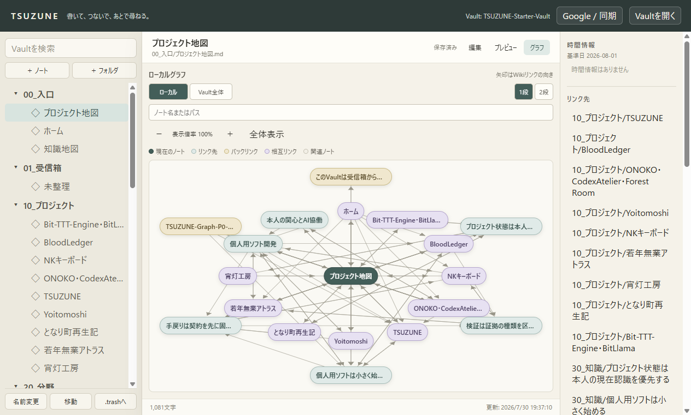
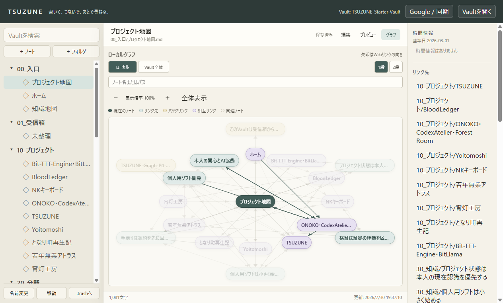
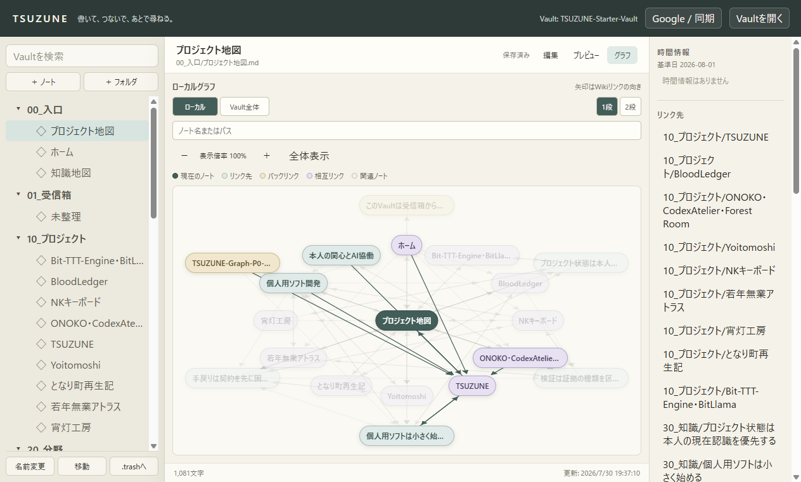
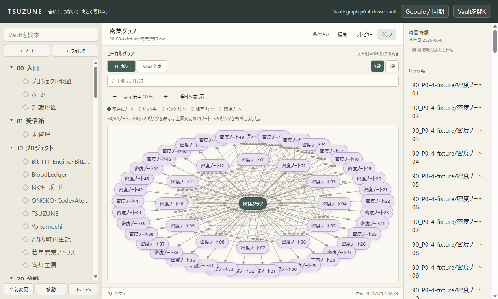
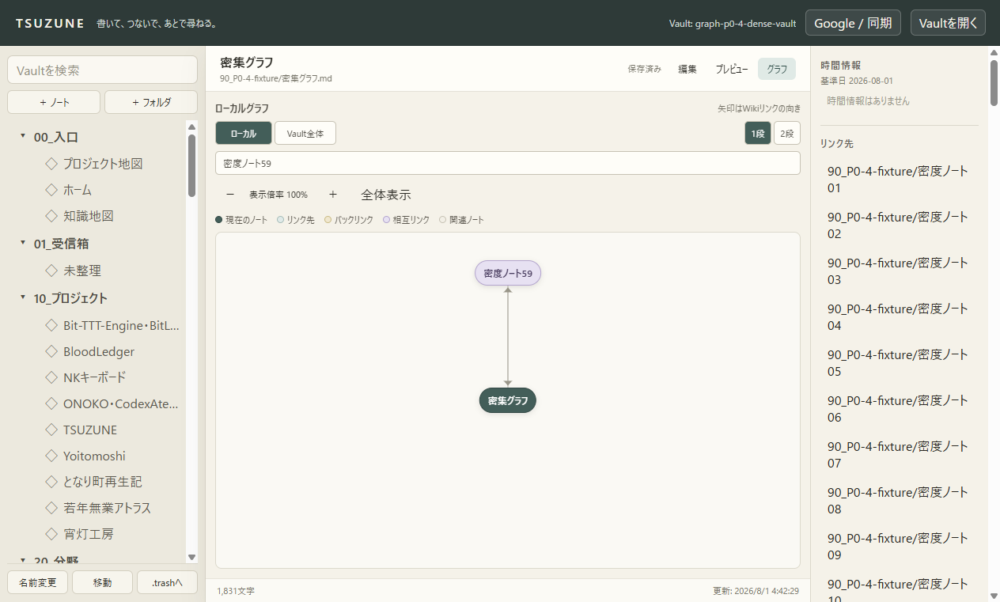

1. 凡例・方向矢印・長い名前
現在、リンク先、バックリンク、相互リンク、関連ノートを5種類の凡例で説明します。矢印はノート中央ではなく境界で止まり、長い名前は切り詰めつつ完全パスをtitle属性に保持します。

大きなVaultでも現在のノートを見失わず、接続方向と関係を読み取り、表示上限を把握しながら探索できるようにした区切りの機能レポートです。
表示を最大50ノート・200リンクへ制限し、現在ノートと直接接続を優先して残します。省略数を明示し、5種類の凡例、矢印、ホバー／キーボードフォーカスによる接続強調を追加しました。表示計算はメモ化し、画面移動や強調のたびにVault全体を並べ直しません。
現在、リンク先、バックリンク、相互リンク、関連ノートを5種類の凡例で説明します。矢印はノート中央ではなく境界で止まり、長い名前は切り詰めつつ完全パスをtitle属性に保持します。

ONOKOノートへポインターを合わせると、接続するノートと線だけを濃くし、それ以外を薄くします。

ノートはフォーカス可能で、TSUZUNEへフォーカスした状態でもホバーと同じ接続強調が働きます。画面外へ消えた古いホバー状態はフォーカスを妨げません。

61ノート・720リンクの入力でも、現在ノートと近接関係を優先しながら50ノート・200リンクで止め、何件を省略したか表示します。

密集グラフを「密度ノート59」で絞ると対象2ノート・2リンクだけになり、不要になった省略通知は消えます。

| 検証 | 結果 |
|---|---|
npm run typecheck | PASS |
npm test | 24 files / 200 tests |
npm run check:mcp | 4 read / 2 write |
npm run build | PASS |
git diff --check | PASS |
webContents.capturePage()で取得した。00AD91EC…AAE7で一致した。8043B22F…469で一致した。capture-starter-result.json、capture-dense-result.json、verification-result.jsonへ保存した。Graph Explorerの基礎はP0-4で一旦閉じます。次は接続済みGoogleアカウントからTasksを読み取り、原典・取得日時・同期元を失わない形でTSUZUNEへ選択取り込みできる最小sliceを開始します。